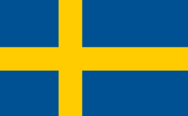
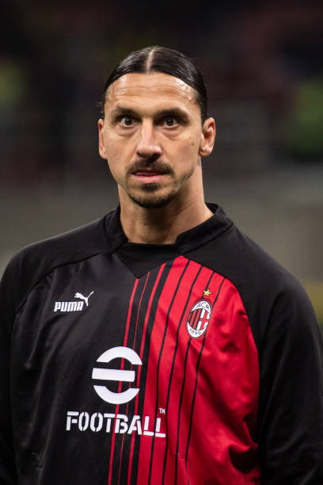
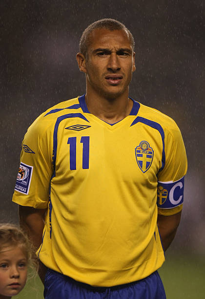
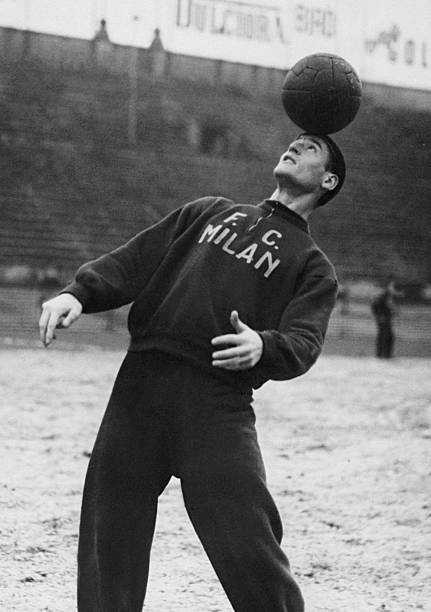
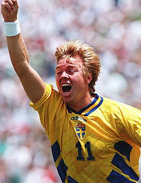

SUECIA
Un equipo con un historial de gigantes en los Mundiales que busca imponer su orden táctico y poderío físico en Norteamérica.





Disputó y perdió la final ante el Brasil de Pelé en suelo propio.
Más de 12 participaciones en la Copa del Mundo con 3 podios.
Reconocidos por su sólida estructura defensiva e intensidad.
UEFA (Europa)
Blågult (Azul y Amarillo) / Las Maravillas Suecas
Superar la fase de grupos y emular la hazaña histórica de 1994.